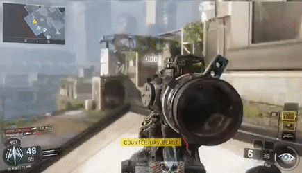

About
An amateur esports team that was established in late 2016, and was founded by Tamer Khattab (XxAGENTxX). They made their debut with Call of Duty®: Black Ops 3 on the Playstation 4. They jumped straight into the competitive scene by playing in the ingame ranked mode 'Arena.' Then made a short appearance on MLG by participating in a few 'Game Battles,' but opted out pre maturely. They found a new home for competitive gameplay on the esports platform, Battlefy. They engaged in various tournaments on the site for 7 different Call of Duty® titles, and are still in the tournament gameplay this present day.
Although most of the competitive gameplay wasn't recorded, it was documented instead and was used to build a team resume. In early 2017, the PROTO TYP3 YouTube channel was created. It featured weekly livestreams of casual gameplay with various different players on the team every stream. Each stream was meant to be interactive with the audience by grouping up with viewers and subscribers, having chatters request challenges, and giving the viewers oppurtunities to for a team try-out if they're interested. By 2018, as the team grew its roster and kept competing in tournaments, they surpassed 1,000 subscribers on YouTube.
By 2018, the livestreams discontinued because of a sudden transition of gaming platforms. Players on the team began to switch from PS4 to PC. Alot of members who werent able to transition, lost track with the roots of the team. Even though there was a disconnect between the team members and the social media aspect, the team never left the competitive scene.
The only remains of the YouTube channel are various tutorials for PS4 livestreaming and a few other videos. The channel accumulated over 300,000 views, and has surpassed 2,500 subscribers. Two services sponsored the brand, TapOfficial/TapTweaker.com and Salad.io, and helped pushed promo for future videos.
Partnered Discord Server

